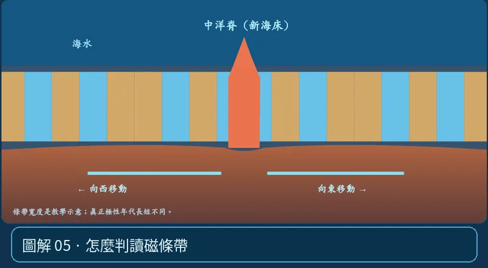

第 04 單元｜圖解 5/6｜課本 p.77–80
怎麼判讀磁條帶
先找中洋脊軸線，檢查兩側正反磁條帶的排列順序與寬度是否對稱，再配合海底岩石年齡判斷擴張。
① 看一眼② 操作圖③ 自己推理④ 揭開解答
🔬 這張圖，請自己動手試
操作圖上方的頁籤、滑桿或按鈕；圖片也能左右滑動放大觀看。
互動圖解 · 怎麼判讀磁條帶

原創 SVG 地科教學模型，方便理解，非真實比例、非即時地震資料；互動無法載入時仍有靜態圖。
STEP 01 · 先觀察
👀 眼睛先找線索
中洋脊為對稱軸，看左右條帶排列順序；不是只看一條帶的顏色是否相同。
💡 為什麼是這樣？
因磁場反轉時序對兩側共同作用，若擴張相近，地磁條帶從中軸往外的順序大致對稱；近軸最年輕。
🎯 換個問法想一題
判讀地磁對稱條帶時，最重要的軸線通常是哪裡？
我想好了，點開看答案 ↓
中洋脊的擴張軸線。
⚡ 一句記住：磁條帶 ≠ 任意彩虹